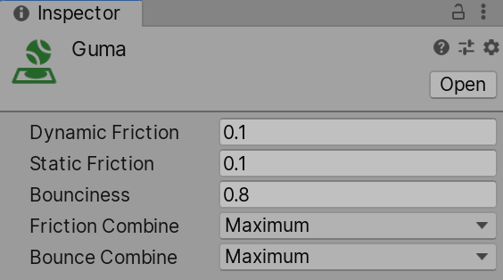
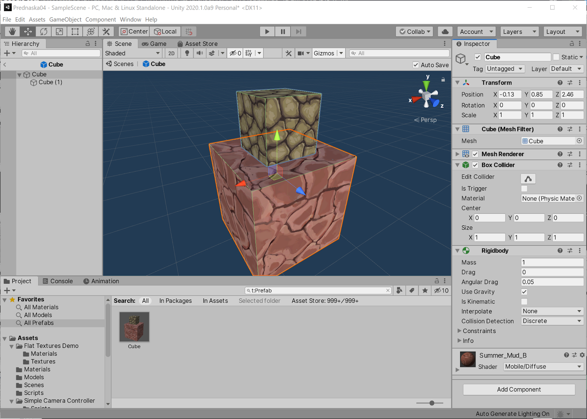

Úvod do Unity3D
Scény, GameObjecty, komponenty, assety a prefaby architektura projektu pro vývoj aplikací virtuální reality.
Scéna (Scene)
GameObject
Komponenty (Components)
Komponenty přidávají GameObjectu další vlastnosti a chování,
přes menu GameObject >
Component nebo tlačítkem Add Component v Inspektoru.
Assets
Prefab (předpřipravená šablona)
Balíčky (Packages)
Architektura VR: standard OpenXR
Vrstvy architektury (Stack)
XR Interaction Toolkit (XRI) interakce: grab, ray, teleport, UI (XR Origin)
Input System (Action Maps) abstraktní akce ← tlačítka, páčky, 6DoF pose
OpenXR Plugin Unity rozhraní překládající akce do OpenXR API
─────────────────────────────────────────────────────────────────────────────
OpenXR Loader & Runtime Meta Runtime / SteamVR / Monado / Apple …
Hardware Meta Quest 3 · Valve Index · HTC Vive · Vision ProAktivace: Edit > Project Settings > XR Plug-in Management > OpenXR (u Questu při vývoji vypněte OpenXR Validation & Faults, jinak build spadne na varování).
XR v Unity: balíčky, objekty a prefaby 1/2
OpenXR: Unity3D: balíčky, objekty a prefaby 2/2
Unity3D studio: instalace
Hlavní okno editoru
Uspořádání projektu
Inspektor objektů
Inspector zobrazuje vybraný GameObject a všechny jeho komponenty.
Je to hlavní místo, kde se nastavují vlastnosti.
Důležité komponenty: Fyzika 1/2 (Rigidbody & Materiály)
Přidávají se přes menu GameObject > Component > Physics.

Rigidbody: tuhé těleso
Řídí fyzikální chování: gravitace, síly, hmotnost (kg), setrvačnost a odpor prostředí
(Drag / Angular Drag). Bez Rigidbody se objekt fyzikou neřídí.
- Interpolate (ve VR povinnost): PhysX počítá ve
FixedUpdate(např. 50/90 Hz), displej běží na 90/120 Hz. Bez Interpolate předměty při pohybu mikro-trhají → spouštěč nevolnosti. - Collision Detection: Continuous / Continuous Dynamic brání prolétnutí předmětu tenkou stěnou při rychlém švihu rukou (tunneling).
- Constraints: zamčení pozice / rotace v osách X, Y, Z (např. zásuvka stolu, posuvná páka).
Vypne vliv gravitace a sil; polohu určuje skript či XRI. Při uchopení se předmět přepne na
isKinematic = true a drží v ruce. Po puštění se vrátí na false a padá podle
fyziky.

Physics Material: povrchy
Přiřazuje se do Collideru a definuje tření a pružnost při kontaktu:
- Dynamic / Static Friction: odpor při skluzu vs. síla nutná k uvedení do pohybu. Ve VR nutné nastavit > 0, jinak odložené předměty na stole samovolně kloužou jako na ledu.
- Bounciness (0 až 1): odrazivost povrchu (0 = plastelína pohlcující energii, 1 = dokonale pružný míček).
- Friction / Bounce Combine: jak se hodnoty obou dotýkajících se těles kombinují (Average, Minimum, Multiply, Maximum).
Fyzika a Rigidbody ve VR
- Fixed Timestep: výchozích 50 Hz (0,02 s) nestačí pro 72/90 Hz headsety. V Project Settings > Time změnit na 0,0111 s (pro 90 Hz) nebo 0,0138 s (pro 72 Hz).
Důležité komponenty: Fyzika 2/2 (Collidery)
Collider: typy a výkon
-
 Primitivní collidery (
Primitivní collidery (Box,Sphere,Capsule): analyticky přesné a extrémně rychlé na výpočet. - Compound collidery: složení tvaru z několika primitivních colliderů (např. meč = rukojeť capsule + čepel box); výrazně levnější než mesh.
- Mesh Collider: kopíruje trojúhelníky 3D modelu. Pro dynamické Rigidbody musí mít zaškrtnuto Convex, jinak nejdou kolize s jinými tělesy.
Pevná kolize vs. Is Trigger
- Pevný collider (Solid): neprostupný, působí odpudivé síly, odrazy a tření. Volá
OnCollisionEnter(Collision). - Trigger (Is Trigger): nebrání pohybu, funguje jako neviditelná detekční zóna. Volá
událost
OnTriggerEnter(Collider). - Aby vznikla kolizní událost, alespoň jeden
ze dvou kolidujících objektů musí mít
Rigidbody!
Collidery v XR: interaktory a detekce
- interaktory neinteragují s mesh, ale jen s collidery.
- XR Direct Interactor (ruka): vyžaduje collider nastavený jako
Trigger (typicky
SphereCollidero $r\approx10$ cm). - XR Ray Interactor (paprsek): vysílá fyzikální
Raycastproti colliderům ve scéně: uchopení z dálky, teleportace a interakce s World Space UI. - XR Poke Interactor (prst): miniaturní trigger na špičce ukazováčku pro fyzické stlačování tlačítek.
Kolize ve VR: vrstvy a průchod zdí
- Self-collision & Layer Matrix: předmět v ruce nesmí narážet do collideru ruky ani hráče (jinak začne nekontrolovaně kmitat).
- Kinematic: předmět věrně kopíruje ruku a projde zdí (rozpad imerze).
- Velocity Tracking: předmět zůstává dynamický, o pevnou zeď se zastaví a k ruce ho dotahuje virtuální pružina.
Joints: spoje
Kamera
Ve VR se kamera nedělá ručně: XR Origin
XR Origin kořen rigu = pozice hráče v místnosti (0)
└── Camera Offset výška očí (~1,6 m), lze doladit
└── Main Camera Tracked Pose Driver → sledování hlavy
FOV a eye offset diktuje headset
├── Left Hand pose levého ovladače
└── Right Hand pose pravého ovladače
XR Origin kořen rigu = pozice hráče v místnosti (0)
└── Camera Offset výška očí (~1,6 m), lze doladit
└── Main Camera Tracked Pose Driver → sledování hlavy
FOV a eye offset diktuje headset
├── Left Hand pose levého ovladače
└── Right Hand pose pravého ovladače
Prefab XR Origin (XR rig)). Pohyb
hlavy
do kamery přenáší komponenta Tracked Pose Driver;
Výška hráče se mění na
Camera Offset, nikdy ne na kameře.
Input System a VR ovladače
Komponenta Script
Pro nás velmi důležitá
Třída odvozená od MonoBehaviour se chová jako komponenta: lze ji
připojit k libovolnému GameObjectu.
 Kód v C#: Create > C#
Script v
Project panelu.
Kód v C#: Create > C#
Script v
Project panelu.
- Běžný textový soubor: Unity sleduje změny a po uložení znovu zkompiluje.
- Podpora MS Visual Studio: (Mac, Win); alternativně JetBrains Rider nebo VS Code.
- Vlastní atributy viditelné v editoru:
publicpole a[SerializeField]se objeví v Inspektoru → ladění bez překladu. - Odkazy na jiné komponenty:
GetComponent<Rigidbody>()(volat vAwake, ne vUpdate).
Životní cyklus
Awake → OnEnable → Start →
(FixedUpdate, Update, LateUpdate)
→ OnDisable → OnDestroy.
Update() proběhne jednou za vykreslený snímek:
jeho četnost kolísá s FPS, proto se násobí Time.deltaTime.
FixedUpdate() běhá v pevném fyzikálním kroku (výchozích
50 Hz → Time.fixedDeltaTime = 0,02 s), tedy nezávisle na snímkové frekvenci.
Ve VR je to klíčové: hlavu i ovladače sleduje headset v pevné frekvenci a fyzika uchopených předmětů se
musí počítat v pevném kroku. Síly se dávají výhradně do FixedUpdate: jinak při
kolísavém FPS předmět v ruce trhá a kmitá, což vyvolává nevolnost.
using UnityEngine;
public class ScriptPVR: MonoBehaviour
{
public float speed = 2f; // viditelné v Inspektoru
public GameObject prefab; // reference na šablonu
Rigidbody rb; // odkaz na jinou komponentu
void Awake() // získání komponenty
{
rb = GetComponent();
}
void Start() // jednou při spawnu
{
Debug.Log("Start");
}
void Update() // jednou za snímek
{ // Time.deltaTime = čas od předchozího snímku
transform.Translate(0, 0, speed * Time.deltaTime);
}
void FixedUpdate() // pevný krok – síly sem
{
if (rb) rb.AddForce(Vector3.up * speed);
}
} Prefabs v praxi
- „Šablony“ objektů, které lze staticky i dynamicky duplikovat.
- Uchovají se všechny komponenty: Mesh, materiály, kolize, fyzika i skripty s nastavenými hodnotami.
- Vytvoření: přetažením objektu ze scény do složky Assetů, nebo tlačítkem Create Prefab v Inspektoru.
- Drag&Drop do scény naopak vytvoří novou instanci prefabu.
- Lze i ze skriptu:
Instantiate(prefab, position, rotation); zničeníDestroy(go)(zpožděněDestroy(go, 2f)).
-
Instance Modrý název v Hierarchy = instance. Lze posunout, přejmenovat, změnit hodnoty: prefab se nezmění.
-
Prefab (šablona) Úprava v režimu Prefab (dvojklik na asset) se propadne do všech instancí ve všech scénách.

Object pooling: performance ve VR
Instantiate() / Destroy() za běhu uvolňují paměť a spouštějí
garbage collection, který se projeví zamrznutím snímku.
Ve VR, kde musíte držet stabilních
90 FPS, se proto hotové instance recyklují: nepoužité se jen skryjí
(SetActive(false)) a příště se znovu vypůjčí z poolu.
Unity má hotový
UnityEngine.Pool.ObjectPool<T>.
VR interakce & pohyb (Locomotion)
Import assetů
Asset Store
Build projektu
Z editoru ke spustitelné aplikaci
Build se spouští z menu File > Build Settings (nebo Ctrl+Shift+B). Otevře se okno, kde vyberete scény, cílovou platformu a název výstupu.
- Scény v buildu: zaškrtnutí a pořadí; scéna s indexem 0 se
startuje první (
SceneManager.LoadScene(1)přepne na další). - Výběr cílové platformy: PC, Mac & Linux, Android, iOS, PS5, Xbox, Meta Quest… Pro nás použijeme PC (případně Android pro Quest).
- SDK & licenční omezení: pro iOS, PS4/PS5 a Xbox je třeba mít příslušné SDK a podepsanou NDA s výrobcem konzole.
- Rychlost: build je oproti Unreal Enginu rychlý; build provede jen to, co se změnilo.
Meta Quest
- 1. V Build Settings přepnout platformu na Android (přepnutí trvá, naimportuje se Android SDK).
- 2. Zařídit Developer Mode na Questu (bezplatný vývojářský účet Meta + aplikace Meta Quest na telefonu) a v headsetu povolit neznámé zdroje.
- 3. Testovat za běhu přes Quest Link / AirLink: File > Build And Run pošle appku do headsetu přes USB či Wi-Fi; odpadá zdlouhavé dokola-buildování APK.